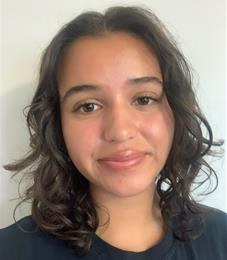

Carnegie Mellon University Computer Science Student

I am a Computer Science student at Carnegie Mellon University with interests in software engineering, game development, and educational technology. Expected to graduate May 2028, I am pursuing a Bachelor of Science in Computer Science and Minor in Business Administration.
Built a bytecode interpreter in C capable of reading, parsing, and executing C1 virtual machine instructions within a UNIX environment. Implemented execution logic to process complex program inputs accurately.
Developed a Python/Pygame 2D platformer game featuring multi- character controls, collision detection, environmental physics, and puzzle-solving mechanics, simulating the popular game “Fireboy and Watergirl”.
Programmed an interactive Tetris simulation in C featuring grid rendering, piece rotation, and real-time piece collision detection.
Taught foundational programming logic, object-oriented concepts, and script development to students aged 7–17 across varied learning styles; adapted STEM instructional strategies to support neurodivergent learners while maintaining PBIS. Guided students in developing Roblox experiences using Lua scripting and Roblox Studio.
Developed an automated JSON data validation system using proprietary software to improve data accuracy and workflow reliability. Integrated the system into an existing communications pipeline, supporting quality assurance across project teams.
Consolidated, updated, and audited administrative database records for over 10,000 student attendees, resulting in increased software efficiency and usability on both the administrative and client perspectives.
Tutored students in 8th grade math-Precalculus, developing individualized lesson plans and supporting academic growth.
Lead undergraduate peer-learning sessions for the last 3 semesters at Carnegie Mellon University.
Active member participating in team practices, regional collegiate tournaments, and campus athletics events.
Email: brooke.abascal@gmail.com
GitHub: github.com/brookeabascal9